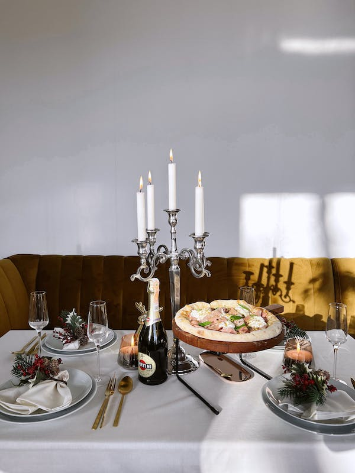
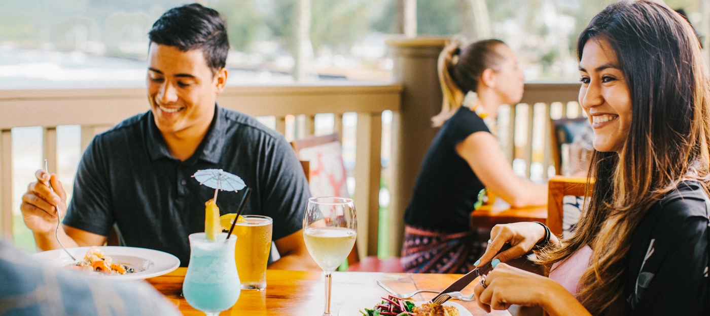

Overview
Purpose
[To prepare and serve food and drinks in order to make profit.]
Audience
[provide high-quality services to local and international customers and to create a positive experience that encourage them to return]
Branding
Website Logo
Style Guide
Color Palette
Palette URL: https://coolors.co/396e94-e7c24f-a43312-381d2a-aabd8c| Primary | Secondary | Accent 1 | Accent 2 |
|---|---|---|---|
| [#396E94] | [#E7C24F] | [#A43312] |
Typography
Heading Font:[Rock salt]
Paragraph Font:[Roboto]
Normal paragraph example
The mouth watering Ugo Daniel's Restaurant in Johannesburg, Ugo Daniel's Restaurant offers wild range of local and international foods and drinks in Johannesburg and Cape Town urban areas. The company was established in 1948 and has been in operation, with local and international visitor coming to make their day
Colored paragraph example
Ugo Daniel's Restaurant is a place to be, the company that offers mouth watering food and drinks, we prioritize the interest of our customers and no matter where you are coming from, Ugo Daniel's Restaurant is a family owned business that brings to the table high-quality food that will match your tast and beyound, Ugo Daniel's Restaurant will give you a tast of remembrance.
Navigation
Site Map
Content
Home page
[Delicious, Authentic Recipe From Ugo Daniel's]
Images for the Home page

Ugo Daniel's Is A Place To Be
Come and enjoy the mouthwatering delicious meal, ice creem, asulted wine, milk shake, snacks gallor, with you and your family and friend's, our restaurant provid a great space for socializing with friends and family, it provide condusive atmosphere and an ambiance cozy cafe and fine dining which iclude mouthwatering signature dish. Ugo Daniel's Restaurant is situiated in Johannesburg urban park and mall, you will find us in Cape Town subbobs and CBD area, our business days/hours ranges from mondays to fridays, 6am to 10pm and doors are open 24/7 on saturdays and sundays,we offer amazing promotion on all our menu gallor such as ice cream, milk shake, asulted wine, delicious meal, and drinks on every end of the month, you can order online by contact the restaurant or come in person. Ugo Daniel's Restaurant is a family own business that has been since 1948 with recipee left by our great grand pa, pass on from one generation to another, which makes Ugo Daniel's Restuarant second to none in the cape flat and all geopolitical zone, as you give Ugo Daniel's food gallor a taste, we would love your feedback and your experience with us.
[Page 2]
Images for the Page 2

[Welcome Home To The Mouth Watering Yummy Yum]
Ugo Daniel's Restaurant are often chosen as venue for celebrating special occasions like birthdays, anniversaries or other mile stones, people who don't have the time or inclination to cook, coming to Ugo Daniel's Restaurant offers a convinient option for a quick meal or take-out, you will feel home enjoying our mouthwatering recipee of delicious meal, which will provide you an experience of a life time. Our reputation on how delicious our meal are and how we serve our customers both online and in person or how we make reservation from the lists of our menu are second to none, it truely gives our clients the convinience to visit Ugo Daniel's Restaurant or order online, not forgetting our special offers that gives every one the chance to come and enjoy the breathtaking and mouthwatering extravangazer gallor of delicasy of what is in our menu. it is always known by the local and international visitors that our restaurant provide a well-designed and user friendly restaurant that offers unique features and personalized experience which has been a loving way of attracting and retaining our visitors to our restaurant for many years and decade's and inco-operating to with new way of cooking and maintaining our recipee.
[Page 3]
Images for the Page 3

[SAVOR EVERY MOMENT & EXPERIENCE OUR PASSION ON EVERY PLATE.]
Ugo Daniel's has come to be with numarious ideal's that kept the restaurant above floating water, we use good quality food in the market to give you the best meals that you can have on your table and with the taugth of you our customers, truely helps us to render the best quality services to you our customers, as we live what we preach and preach what we live on the table, we create an atmosphere of execellence between you and us. Over the decade and years our experience has been what kept us flawless in executing our business with execellence, knowing our customers comes first,gives us the understanding in talking to our customers and knowing which needs to prioritize at a given time, we have pass on to our staff or empowered our staff proper skill's on how best to exibit leadership and service to our customers, we live by proper code of conduct in executing services to you our customers, knowing how important you are to us , gives us the ability to have a winning attitude towards what we present to you as meals and drinks and how best rendering services to you. You can never go wrong with our restaurant, we offer catering services for events or large parties, you can find about our catering on the restaurants website by contacting us, we are mindful of vegetarian/vegan, your tast and style we prioritize to make sure you come first in all we do, Ugo Daniel's is a place to be.
Wireframes
Create three wireframes for your site. One for each page and list them here
Home
[Any additional details about home that the wireframe does not make clear]
.png)
[Page 2]
[Any additional details about page 2 that the wireframe does not make clear]
.png)
[Page 3]
[Any additional details about page 3 that the wireframe does not make clear]
.png)